Transformer and LLM¶
约 1732 个字 预计阅读时间 6 分钟
Transformer Basics¶
- Tokenize words(word->tokens)
- A tokenizer maps a word to one/multiple tokens.
- Map tokens into embeddings
- Word Representation
- One-Hot Encoding: 太长太稀疏
- Word Embedding: 做一个映射，可以把一个 token 看作一个向量。
- Word Representation
- Multi-Head Attentioin(MHA)
- Self-Attention
- 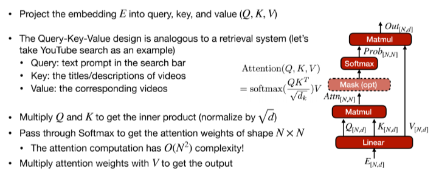
- 查询键值的设计类似于一个检索系统(油管搜索为例)
- Query: 搜索栏中的文本提示
- Key: 视频的标题或描述
- Value: 相应的视频
- \(Attentioin(Q,K,V)=softmax(\frac{QK^T}{\sqrt d_k})V\)
- 查询键值的设计类似于一个检索系统(油管搜索为例)
- MHA: Each head captures different semantics
- 我们需要不同的注意力映射来捕捉不同的语义关系。
- 模型有 \(H>1\) 个 attention heads(\(QKV\) 的并行分支)，最终结果由不同的注意力结果拼接而成。
- 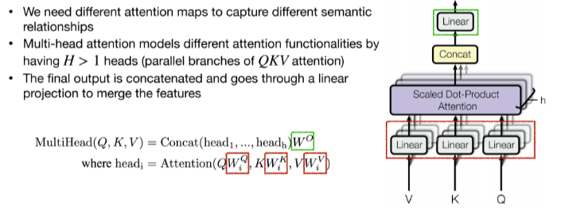
- Attention Masking
- 判别任务的 token 能够看见所有的 token, 生成任务只能看到前面的。
- 对应两种 mask.
- 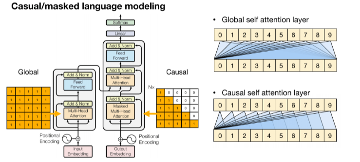
- Feed-Forward Network
- Self-Attention 只建立了 token 之间的关系(进行的都是线性变化即矩阵乘法)，我们想要更强的表达能力，所以希望有个激活函数引入非线性性。
- 朴素实现就是一个 2 层 MLP 并使用 ReLU
- \(FFN(x)=ReLU(xW_1+b_1)W_2+b_2\)
- LayerNorm & Residual connectioni
- LN 对每个 token 进行规范化，随后作用仿射变化。(BatchNorm 是对整个 batch 进行规范化)
- 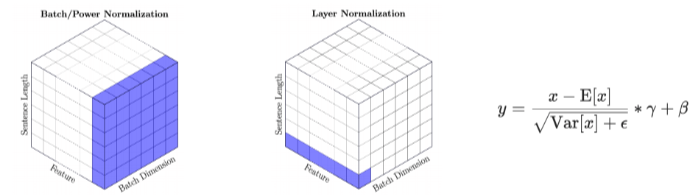
- Transformer Block
- 添加 LN 和 Residual Connectioin 来促进训练的稳定性。
- 两种方法：Post-Norm 和 Pre-norm, 后者更多。
- 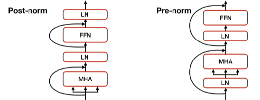
- Positional Encoding(PE)
- attention 和 FFN 并没有区分输入 token 的顺序，即将输入 token 打乱后结果是一样的详单与我们只是对 set encoding 而非 sequence encoding.
- 使用位置编码来解决。为每一个 token 添加一个位置信息。
- 每个单词在句子中的位置有一个唯一的 encoding
- 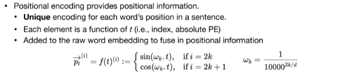
Put it all together
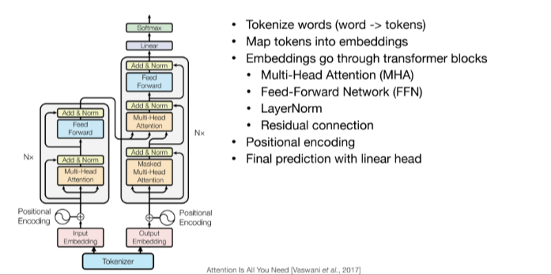
Transformer Design Variants¶
Encoder & Decoder¶
- Encoder-Decoder
- The original Transformer is an Encoder-Decoder architecture
- T5 offers a unified text-to-text model for transfer learning on various NLP tasks
- The prompt is fed to the encoder, the decoder generates the answer
- Encoder-only
- BERT(Bidrectional Enocder Representations from Transformers) 是一个 encoder-only 的预训练模型
- Two pre-training objectives
- Masked Language Model(MLM): Mask some percentage of the input tokens at random; train the model to predict masked tokens.(类似完型填空)
- Next Sentence Prediction(NSP): Whether sentence B is the next sentence of Sentence A(less used)
- 通过 fine-tune 预训练模型来适配对应的下游任务
- 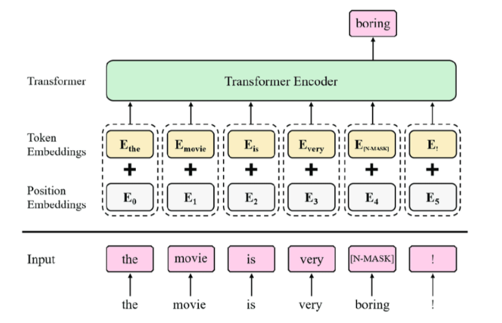
- Decoder-only(GPT)
- 预训练的目标是 Next word prediction
- 对于小模型(GPT-2) 预先训练好的模型将根据下游任务进行微调。Large model can run in zero-shot/few-shot.
- 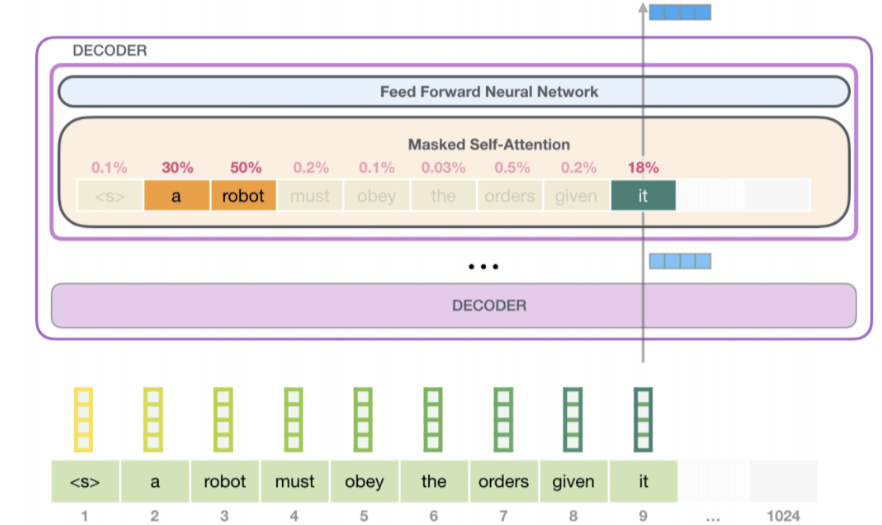
Positional Encoding¶
- Absolute Positional Encoding
- 把位置信息直接加到 embedding 上，因此会同时影响 \(QKV\) 的值。The info is propagated through the entire Transformer.
- Relative Positional Encoding
- 将位置信息加到 attention score 上，因此不会影响 \(V\)。可以泛化到训练中未见的训练长度 (train short, test long)
- Attention with Linear Biases(ALiBi)
- 使用相对距离来代替绝对的索引。将偏移量加到 attention matrix 上，再做 softmax 并与 \(V\) 相乘。
- 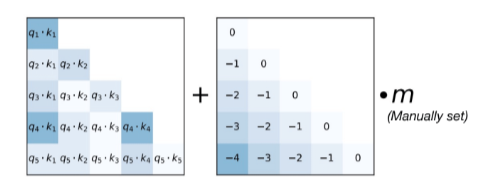
- Rotary Positional Embedding(RoPE)
- Rotate the embeddings in 2D space
- Split an embedding of dimenstion \(d\) into \(frac{d}{2}\) pairs, each pair considered as a 2D coordinate
- Apply rotation according to the positioin \(m\).
- 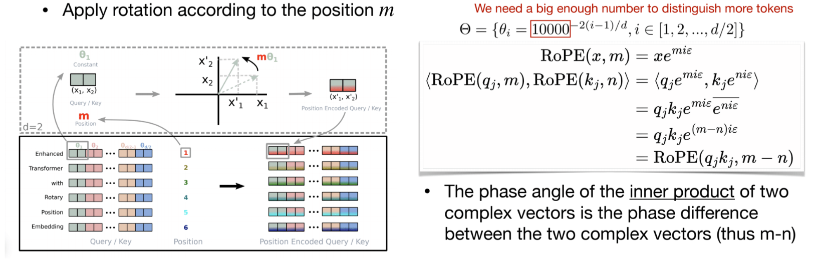
- 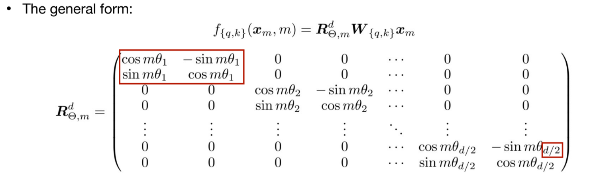
- 优点：可以通过插值 RoPE (使用一个较小的 \(\theta_i\)) 来扩展上下文长度支持。
- Rotate the embeddings in 2D space
KV Cache Opimizations¶
- The KV Cache could be large with long context
- 在 transformer decoding 中，我们需要存储所有之前 Token 的 key 和 value 来计算 attention,这就是 KV Cache。
- 随着上下文长度的增加， KV Cache 会变得非常大，因此需要一些优化来减少存储空间。减少
#kv-heads - Multi-head attentioin(MHA): \(N\) heads for query, \(N\) heads for key/value
- Multi-query attention(MQA): \(N\) heads for query, 1 heads for key/value
- Grouped-query attention (GQA): \(N\) heads for query, \(G\) heads for key/value(typically \(G=N/8\))
- 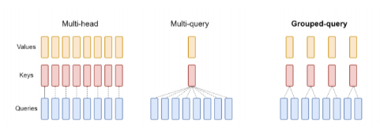
Improving over FFN¶
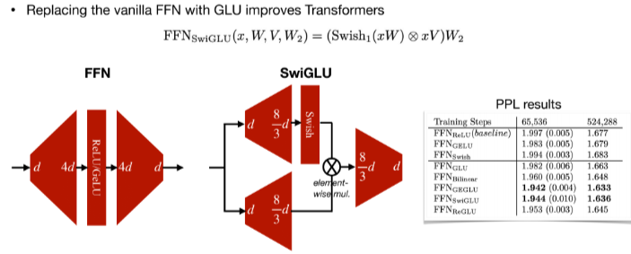
\(Swish(x)=x\cdot sigmoid(x)\)
Large Language models¶
LLMs exhibit some "emergent" abilities that are only available with a lagre enough model size.
- GPT-3
- Scaling up Transformers to be few-shot learners(in-context learning)
- 传统 NLP 的 pipeline 是先预训练随后对下游任务微调，GPT-3 可以直接在下游任务上学习。
- Zero-shot: answer questions given task descriptions
- Few-shot: learn with demonstrations
- 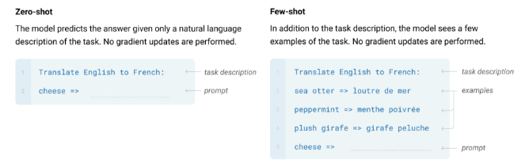
- OPT
- Open Pre-trained Transformer Language Models 来自 Meta 2022
- Decoder-only, Pre-norm, ReLU in FNN
- 性能和GPT 很接近
- BLOOM
- LLaMA
- Large Language Model Archive 来自 Meta 的开源预训练大模型
- Decoder-decoder, Pre-norm, SwiGLU, RoPE
- LLaMA 2
- 更大的上下文长度
- 更多的训练 tokens
- GQA for large models
Efficient inference algorithms for LLMs¶
Quantization¶
- Smooth Quantization(W8A8)
- Weights are easy to quantize, but activation is hard due to oueliers
- But outliers persist in fixed channels!
- 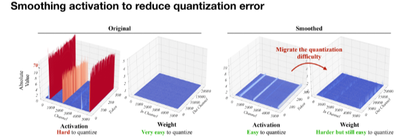
- 我们将权重扩大 \(N\) 倍，将激活缩小 \(N\) 倍，数学上等价，因此将量化难度从 activation 迁移到 weights
- 在 Transformer 中将所有密集型算子(线性层等)使用 INT8 计算，其它轻量级算子(LN,softmax)使用 FP16 运算，可以均衡精度和推理效率。
- AWQ for low-bit weight-only quantization
- 权重对于 LLM 的性能并不同等重要
- 只有 1% 的突出权重以 FP16 的格式存储，可以显著改善性能。
- TBD
- 权重对于 LLM 的性能并不同等重要
Pruning¶
- Wanda:pruning by considering weights and activations
- 思想类似 AWQ，我们剪枝权重时应该同时考虑激活值的分布
- 使用 \(|weight|\times \Vert activation\Vert\) 作为剪枝的 critieon.
- 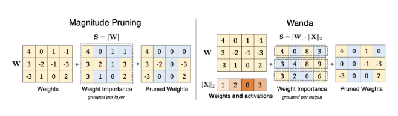
- Attentioin Sparsity
- SpAtten: 对 token & head 剪枝，这是 cascade pruning, 在运行中逐渐去掉不重要的 tokens & heads.

- H2O: token pruning in KV cache
- 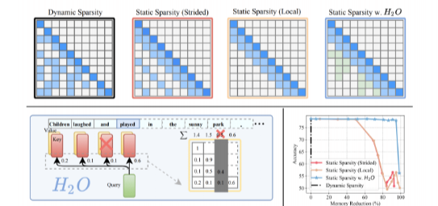
- TBD
Efficient inference systems for LLMs¶
vLLM¶
- Analyzing the waste in KV Cache usage
- Internal fragmentation: 不知道输出序列的长度因而 Over-allocated
- Reservation: not used at the current step, but used in the future
- External fragmentation: due to different sequence lengths (不同内存分配之间会有空隙)
- 从 OS 中借鉴 virtual memory 和分页的思想，允许 KV cache 不连续存储，而逻辑地址保持连续，通过页表来映射。
- 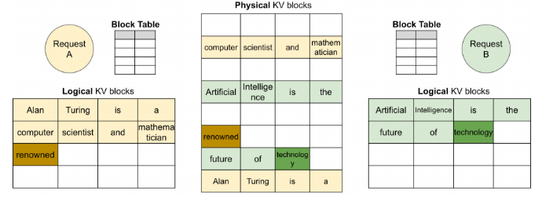
- 一个逻辑 KV 缓存块，一个块表，一个物理 KV cache 块。块表负责从 logical 到 Physical 的映射
- 对一个 prompt, 它在逻辑地址上是连续的，而在物理地址上是可以不连续的
- 动态块映射支持在并行采样中进行即时共享，即我们可以喂一个 prompt, 随后由多个进程共享，生成多个不同的输出。
StreamingLLM¶
- 在流媒体应用程序中迫切需要 LLM，多轮对话需要长时间的交互。但是我们面临挑战；
- 消耗大量内存
- 无法泛化到超出训练序列长度的文本(Model Performance Breaks)
- 一个自然的想法：window attention
- 我们只关注最近的 KV 状态
- 但是当文本长度超过 cache 大小时，最初的 token 会被逐出。
- Observation: 最初的 token 有很大的 attention score, 尽管这个 token 在语义上并不重要。
- softmax 中我们需要让 attention scores 和为 1。
- 由于第一个 token 的可见性，后续所有 token 都会关注第一个 token。
- 因此如果某个部分不太相关，网络就会决定将所有分数集中到第一个标记上。
- 即 initial tokens 的重要性来自它的 position 而非语义。
- StreamingLLM
- Objective: 让 LLM 能通过有限的 attention windows 训练， 这样就可以在不额外进行训练的情况下解决无限文本长度问题。
- Idea: 保存 attention sink tokens 的 KV 值，和 sliding windows 一起计算来保持模型的行为稳定。
- 位置编码时我们使用 cache 里的位置。
FlashAttention¶
最后更新:
2024年9月25日 22:17:55
创建日期: 2024年9月16日 21:56:06
创建日期: 2024年9月16日 21:56:06